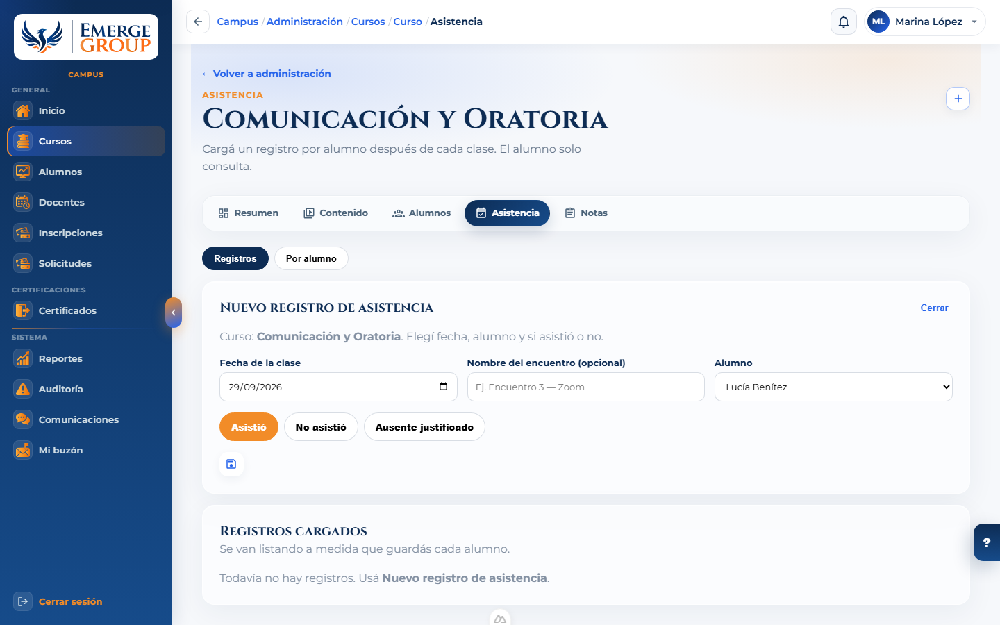
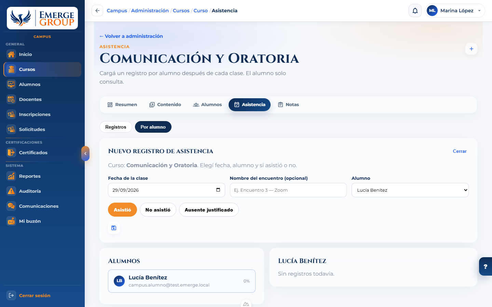
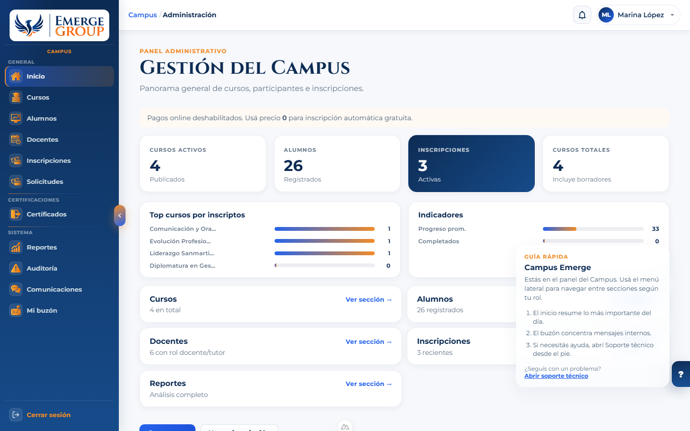

Cómo usar el Campus
Emerge Group
Manual pensado para alumnos y docentes. Explica paso a paso qué hacer en cada pantalla, con lenguaje simple.
Índice
1. Antes de empezar
El Campus es el espacio online de Emerge donde:
- los alumnos ven sus cursos, materiales, asistencia, notas y certificados;
- los docentes acompañan a sus grupos, cargan asistencia y notas, y publican avisos.
Vas a necesitar:
- el correo electrónico con el que te inscribieron;
- la contraseña que te enviaron (o la que hayas elegido al registrarte).
2. Cómo ingresar

- Abrí www.emergegroupconsultora.com.ar/campus.
- Tocá Ingresar (o andá directo a la pantalla de acceso).
- Escribí tu correo y tu contraseña.
- Tocá el botón para entrar.

Si todavía no tenés cuenta y te invitaron a registrarte, usá Registrarse y completá el formulario.

3. Guía para alumnos alumno
3.1 Tu inicio
Al entrar vas a ver un resumen: el curso que podés continuar, tu avance y atajos a lo más usado.

- Usá Continuar curso para retomar donde lo dejaste.
- Si hay un mensaje sin leer, vas a ver un aviso hacia el buzón.
- El menú de la izquierda te lleva a cada sección.
3.2 Mis cursos

- Entrá a Mis cursos.
- Elegí el programa que querés abrir.
- Dentro vas a ver los módulos y las clases (videos, textos y materiales).
3.3 Asistencia
Acá consultás si figurás presente, ausente o con ausencia justificada en cada encuentro. No podés cambiar estos datos vos: los carga el docente o el equipo de Emerge.

- Los gráficos te dan una vista rápida por curso.
- Si hubo una justificación, también vas a ver el motivo.
3.4 Mis notas

Las notas aparecen cuando el docente las publica. Si ves un comentario o devolución, leelo con calma: suele orientar cómo mejorar.
3.5 Comunicaciones y buzón

- Comunicaciones: anuncios del Campus.
- Mi buzón: mensajes más directos (por ejemplo, recordatorios o respuestas del equipo).
3.6 Mi progreso

Te muestra qué avanzaste y qué te falta. Desde ahí podés volver al curso para seguir.
3.7 Certificados

Cuando el equipo emite tu certificado, aparece acá. Podés abrirlo o descargarlo. Si terminaste el curso y todavía no figura, avisá a administración.
4. Guía para docentes docente
4.1 Tu inicio

- Vas a ver un acceso rápido al curso de la próxima clase.
- También un resumen de alumnos y cursos asignados.
- Si hay mensajes sin leer, te lo avisa el banner superior.
4.2 Mis cursos

Desde cada curso podés entrar a:
- Contenido — materiales y clases del programa.
- Asistencia — cargar quién vino a cada encuentro.
- Notas — evaluaciones y calificaciones.
4.3 Cómo cargar la asistencia
Después de cada clase, registrá a cada alumno. No hace falta “crear un encuentro” aparte: elegís la fecha y guardás.

- Abrí el curso → Asistencia.
- Tocá Nuevo registro de asistencia (el botón +).
- Elegí la fecha de la clase.
- Elegí el alumno.
- Marcá: Asistió, No asistió o Ausente justificado.
- Si es justificado, escribí el motivo (es obligatorio) y guardá.
- Repetí para el resto del grupo.


4.4 Notas y evaluaciones

- Entrá al curso → Notas (o Calificaciones).
- Creá una evaluación (por ejemplo: trabajo práctico, examen, participación).
- Cargá la nota de cada alumno y, si querés, un comentario.
- Guardá. El alumno la verá en Mis notas.
4.5 Comunicaciones y anuncios


- Andá a Anuncios (o desde Comunicaciones).
- Creá un anuncio nuevo.
- Escribí el título y el mensaje.
- Publicá cuando esté listo (o dejalo en borrador si todavía no).
También podés usar Mi buzón para mensajes más directos con el equipo o los alumnos.
5. Si necesitás ayuda
En casi todas las pantallas del panel vas a ver una ayuda rápida (ícono de pregunta o pestaña lateral). Ahí aparecen tips de la pantalla en la que estás.

- Desde esa ayuda podés abrir Soporte técnico y escribirle al equipo.
- En la pantalla de ingreso, Contactanos te lleva a WhatsApp de Emerge.
6. Preguntas frecuentes
No puedo entrar
Revisá que el correo sea el mismo con el que te inscribieron y que la contraseña esté bien escrita (mayúsculas y minúsculas importan). Si no, usá “recuperar contraseña” o Contactanos.
No veo mi curso
Puede faltar la inscripción. Avisá a administración con tu nombre y correo.
No veo el video o tarda mucho
Probá otra red (por ejemplo datos móviles o Wi‑Fi de casa), cerrá otras pestañas y volvé a entrar a la clase. Si sigue fallando, usá Soporte técnico.
¿Puedo marcar yo mi asistencia?
No. La asistencia la carga el docente o el equipo de Emerge. Vos solo la consultás.
Cargué mal una asistencia, ¿cómo la corrijo?
Si sos docente y el sistema no te deja editar, pedile la corrección a quien administra el Campus.
¿Dónde está el Campus?
Siempre en www.emergegroupconsultora.com.ar/campus.